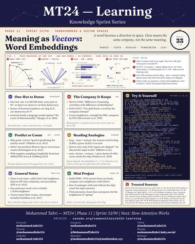
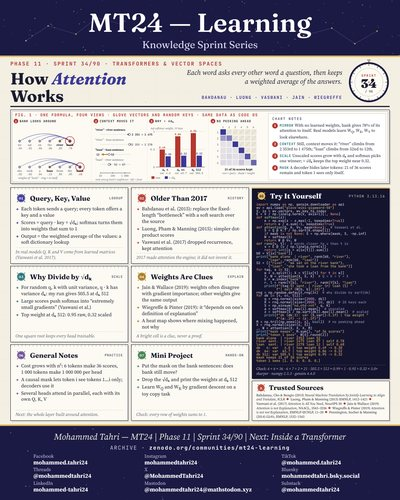
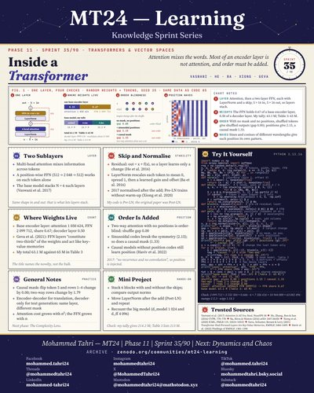

Abstract
This issue follows meaning from a single word to a working layer. Sprint 33 placed 400 000 words as directions in a space of 50 numbers and read similarity as an angle. Sprint 34 let each word take a weighted average of the words around it, and Sprint 35 wrapped that step in the layer that language models stack. At each step the code tested a popular claim, and several did not survive.
Highlights
- 33Cat sits 22.8° from dog and 87.9° from democracy; one-hot puts every pair at 90°.
- 33King − man + woman lands on king (0.885); queen (0.852) needs the inputs skipped.
- 34Context moves “bank”: “loan” climbs from its 52nd neighbour to its 12th.
- 34Without ÷ √dₖ the top softmax weight hits 0.95 at dₖ 512; with it, 0.32.
- 35The FFN holds 0.67 of an encoder layer; unmasked attention can’t see order.
Figures in words
1 Fig. 1 · Angles from “cat” Sprint 33
- cat · dog 22.8° · kitten 50.3° · democracy 87.9°
- one-hot: every pair 90°
- dense: angles mean company
2 Fig. 2 · Why ÷ √dₖ Sprint 34
- raw softmax: dₖ 4 0.49 · dₖ 64 0.86 · dₖ 512 0.95
- ÷ √dₖ: 0.30–0.32
- mean top weight, 10 keys
3 Fig. 3 · Where weights live Sprint 35
- attention 0.33 · FFN 0.67
- one base encoder layer · model tally 63.1 M (Table 3: 65 M)
1 Methods
Three scripts, each run before rendering and re-derived by an independent implementation (gensim’s own API, scipy, explicit loops). Data: GloVe vectors (Wikipedia 2014 + Gigaword 5, 400 000 words) and seeded random weights. Python 3.13.16 · numpy 2.5.3 · scipy 1.18.1 · gensim 4.4.0.
2 Common Misreadings, Checked
“King − man + woman = queen.”Checked King comes first; queen wins only once the inputs are skipped.
Mikolov et al. 2013 · Nissim et al. 2020
“Close vectors mean synonyms.”Checked Antonyms share contexts: cold is hot’s 2nd neighbour.
Hill et al. 2015
“Attention was invented in 2017.”Checked Bahdanau et al. used it for translation in 2014; 2017 dropped recurrence.
Bahdanau et al. 2015 · Vaswani et al. 2017
“Attention weights explain the model.”Checked Contested: other weights can give the same output.
Jain & Wallace 2019 · Wiegreffe & Pinter 2019
“A transformer is mostly attention.”Checked The FFN holds two-thirds of an encoder layer’s weights.
Geva et al. 2021
In This Issue

Meaning as Vectors: Word EmbeddingsA word becomes a direction in space. Close means the same company, not the same meaning.
How Attention WorksEach word asks every other word a question, then keeps a weighted average of the answers.
Inside a TransformerAttention mixes the words. Most of an encoder layer is not attention, and order must be added.
Now I Can
Read cosine as an angle, compute attention by hand with ÷ √dₖ and a mask, and count a transformer’s weights.
Mistakes Avoided
Trusting an analogy without its skip rule, reading heat maps as reasons, forgetting that unmasked attention ignores order.
Phase Project
One notebook: GloVe angles, attention on two bank sentences, one pre-LN block with a shuffle test and a weight tally.
R References
- Harris (1954) Word 10(2–3)
- Firth (1957) Studies in Linguistic Analysis
- Mikolov et al. (2013) NeurIPS 26
- Pennington et al. (2014) EMNLP
- Levy & Goldberg (2014) NeurIPS 27
- Hill et al. (2015) CL 41(4)
- Nissim et al. (2020) CL 46(2)
- Bahdanau et al. (2015) ICLR
- Vaswani et al. (2017) NeurIPS 30
- Jain & Wallace (2019) NAACL
- Wiegreffe & Pinter (2019) EMNLP-IJCNLP
- Xiong et al. (2020) ICML
- Geva et al. (2021) EMNLP